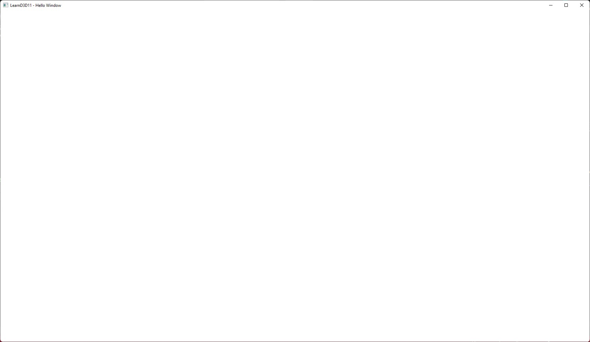

Hello Window¶
Note
If you want to try to follow this series without downloading the full source, you can try this empty project, it has been setup already with all the include directories and libraries you will need throughout the whole series!
Let's start with the whole example code for creating a simple window first. We use the GLFW library
to create our window and as you can probably see, it's really not that much code. The following code
opens a new blank window titled "LearnD3D11 - Hello Window" and will leave it open until you hit
close.
#include <GLFW/glfw3.h>
#include <cstdint>
#include <iostream>
int main(int argc, char* argv[])
{
if (!glfwInit())
{
std::cout << "GLFW: Unable to initialize\n";
return -1;
}
GLFWmonitor* primaryMonitor = glfwGetPrimaryMonitor();
const GLFWvidmode* videoMode = glfwGetVideoMode(primaryMonitor);
const int32_t width = static_cast<int32_t>(videoMode->width * 0.9f);
const int32_t height = static_cast<int32_t>(videoMode->height * 0.9f);
glfwWindowHint(GLFW_SCALE_TO_MONITOR, GLFW_FALSE);
glfwWindowHint(GLFW_CLIENT_API, GLFW_NO_API);
GLFWwindow* window = glfwCreateWindow(
width,
height,
"LearnD3D11 - Hello Window",
nullptr,
nullptr);
if (window == nullptr)
{
std::cout << "GLFW: Unable to create window\n";
glfwTerminate();
return -1;
}
const int32_t windowLeft = videoMode->width / 2 - width / 2;
const int32_t windowTop = videoMode->height / 2 - height / 2;
glfwSetWindowPos(window, windowLeft, windowTop);
while (!glfwWindowShouldClose(window))
{
glfwPollEvents();
// future update code
// future render code
}
glfwDestroyWindow(window);
glfwTerminate();
return 0;
}
Now let's go over everything in that example in more detail.
#include <GLFW/glfw3.h>
C++ needs to know where all the definitions and declarations are coming from. We therefore have to include the GLFW header so that everything we need is present in our source file.
if (!glfwInit())
{
std::cout << "GLFW: Unable to initialize\n";
return -1;
}
Pretty obvious, right? glfwInit
tries to initialize GLFW. If it fails to do so, let the user know and end the program, since
there is no point in going further.
GLFWmonitor* primaryMonitor = glfwGetPrimaryMonitor();
const GLFWvidmode* videoMode = glfwGetVideoMode(primaryMonitor);
const int32_t width = static_cast<int32_t>(videoMode->width * 0.9f);
const int32_t height = static_cast<int32_t>(videoMode->height * 0.9f);
This piece of code grabs the main monitor via glfwGetPrimaryMonitor and its current resolution with glfwGetVideoMode, so that we can derive a window width and height from it - and it will look similar no matter what resolution you use. Size-wise it will cover 90% of your main monitor.
glfwWindowHint(GLFW_SCALE_TO_MONITOR, GLFW_FALSE);
This will tell GLFW to not scale the window in any way, should you have set up a specific scaling
other than 100% on your desktop. That will keep the window size at what we set it, and lets us
forget about fractional window and pixel scaling.
glfwWindowHint(GLFW_CLIENT_API, GLFW_NO_API);
GLFW was initially meant to support development of OpenGL based applications, hence the gl in its
name, but over the years it also started to support other APIs and not just OpenGL. Now since GLFW
by default creates a context for OpenGL, and as we want to use DirectX we need to tell GLFW
to not do so via glfwWindowHint.
There are many other options one can define through glfwWindowHint which can be found here. Many of these options might be useful in your application, depending on what you want and how you want to design your window.
GLFWwindow* window = glfwCreateWindow(
width,
height,
"LearnD3D11 - Hello Window",
nullptr,
nullptr);
if (window == nullptr)
{
std::cout << "GLFW: Unable to create window\n";
glfwTerminate();
return -1;
}
This piece actually creates the window, if everything goes well. We pass in desired window dimensions and a title, and call glfwCreateWindow. Make sure to check the return value, window creation can fail.
const int32_t windowLeft = videoMode->width / 2 - width / 2;
const int32_t windowTop = videoMode->height / 2 - height / 2;
glfwSetWindowPos(window, windowLeft, windowTop);
GLFW does not center windows automatically, like you can with other libraries like SDL, there for we will center the window manually.
All we need is just a bit of math an glfwSetWindowPos. It sets the window position in screen coordinates, specified by the top left corner of the window.
while (!glfwWindowShouldClose(window))
{
glfwPollEvents();
// future update code
// future render code
}
That is more or less the heart of your application, the mainloop.
You could also call it game loop, since in here everything happens.
From reading keyboard and mouse input, reacting to it, to telling the graphics
card to put a frog on the screen. It will keep doing it, until it gets signaled
to not do that anymore because you closed the window for example
(glfwWindowShouldClose),
or hit Escape and mapped Escape to close the window. glfwPollEvents
will make sure that GLFW knows about all required events coming from the operating system.
glfwDestroyWindow(window);
glfwTerminate();
return 0;
Now we clean up the resources we have created, such as the window itself and
the GLFW system. Then simply return to the OS, without any error.
glfwDestroyWindow
will obviously destroy the window and glfwTerminate
cleans up GLFW.
When you start the program, you should see something like this.

Why GLFW?
We have decided to include GLFW to manage our window (and later input) because it is a very simple library, ready to use and above all, because of consistency, plenty of other resources use GLFW, so it should be easier to transfer the knowledge you will gain here elsewhere.
There are other libraries, which handle windowing and input (amongst other things) out there as well, here are a few to choose from:
You could also write all that using the native functions and constructs the OS provides, on windows it would be WinAPI, and although it is old and not necessary to do all the heavylifting yourself, a lot of Microsoft's own guides rely on the WinAPI so we have an example on that. We will not be covering any other Win32 topics, unless it is explicitly required
You are probably going to continue writing your own engine after this tutorial and might decide to support more platforms, other than just windows, then this is already covered by GLFW.
First abstraction¶
The further we go into this tutorial series the more stuff we will add to the program.
But we don't want to cram everything into Main.cpp, your main entry point of the program.
A good practise is to split up things into smaller units, to not lose overview.
Right now we don't have much to show for, just a window, made by a few lines of code,
but we are going to abstract that code into a new class called Application which will also be
our main container so to speak, in which all the magic will happen.
I will show the whole code first, and then explain again what means what.
Application.hpp¶
#pragma once
#include <string>
#include <iostream>
struct GLFWwindow;
class Application
{
public:
Application(const std::string& title);
virtual ~Application();
void Run();
protected:
virtual void Cleanup();
virtual bool Initialize();
virtual bool Load() = 0;
virtual void Render() = 0;
virtual void Update() = 0;
private:
GLFWwindow* _window = nullptr;
int32_t _width = 0;
int32_t _height = 0;
std::string_view _title;
};
Application.cpp¶
#include "Application.hpp"
#include <GLFW/glfw3.h>
Application::Application(const std::string& title)
{
_title = title;
}
Application::~Application()
{
Cleanup();
}
void Application::Run()
{
if (!Initialize())
{
return;
}
while (!glfwWindowShouldClose(_window))
{
glfwPollEvents();
Update();
Render();
}
}
void Application::Cleanup()
{
if (_window != nullptr)
{
glfwDestroyWindow(_window);
_window = nullptr;
}
glfwTerminate();
}
bool Application::Initialize()
{
if (!glfwInit())
{
std::cout << "GLFW: Unable to initialize\n";
return false;
}
GLFWmonitor* primaryMonitor = glfwGetPrimaryMonitor();
const GLFWvidmode* videoMode = glfwGetVideoMode(primaryMonitor);
_width = static_cast<int32_t>(videoMode->width * 0.9f);
_height = static_cast<int32_t>(videoMode->height * 0.9f);
glfwWindowHint(GLFW_SCALE_TO_MONITOR, GLFW_FALSE);
glfwWindowHint(GLFW_CLIENT_API, GLFW_NO_API);
_window = glfwCreateWindow(_width, _height, _title.data(), nullptr, nullptr);
if (_window == nullptr)
{
std::cout << "GLFW: Unable to create window\n";
return false;
}
const int32_t windowLeft = videoMode->width / 2 - _width / 2;
const int32_t windowTop = videoMode->height / 2 - _height / 2;
glfwSetWindowPos(_window, windowLeft, windowTop);
return true;
}
HelloWindowApplication.hpp¶
#include "Application.hpp"
class HelloWindowApplication final : public Application
{
public:
HelloWindowApplication(const std::string& title);
protected:
bool Load() override;
void Render() override;
void Update() override;
}
HelloWindowApplication.cpp¶
#include "HelloWindowApplication.hpp"
HelloWindowApplication::HelloWindowApplication(const std::string& title)
: Application(title)
{
}
bool HelloWindowApplication::Load()
{
return true;
}
void HelloWindowApplication::Update()
{
}
void HelloWindowApplication::Render()
{
}
Main.cpp¶
#include "HelloWindowApplication.hpp"
int main(int argc, char* argv[])
{
HelloWindowApplication application{ "LearnD3D11 - Hello Window" };
application.Run();
}
Let's start with Main.cpp. That's all its doing, creating the "hellowindow" application and running it.
In the future this can be accompanied by loading a configuration, initializing a logger,
initiating a connection to a possible server, or other stuff.
public:
...
void Run();
...
This is a section of the Application class, showing only its publicly available methods. Run being
the most important one to the outside world, like Main, it's the entry point into this Application.
We still don't want to cram everything into one main or one method, therefore Run is split up
again into the following blocks.
void Application::Run()
{
if (!Initialize())
{
return;
}
if (!Load())
{
return;
}
while (!glfwWindowShouldClose(_window))
{
glfwPollEvents();
Update();
Render();
}
}
This function is pretty simple. Initialize, as the name suggests, will initialize everything
which is required for the app to run, which currently is the window in our case. In future
chapters it will also include initializing D3D11, its resources, and ImGUI for the UI.
Load's purpose is to load all the assets required to run the application, in further chapters it will
encompass textures, shaders, models and other things.
The next block is the aforementioned mainloop or game loop, which still does what it was doing before,
checking with the OS if events need to be processed, and now we also call a Update and Render method.
Update may contain queries about pressed key or mouse buttons, updating variables or other things
which are - for instance - reflected on display inside the Render method.
You probably have noticed that all the protected method in Application are virtual, that's because
we are deriving from Application in form of HelloWindowApplication and only focus on those four
methods if required. We now don't have to deal with the mainloop anymore for the time being.
virtual void Cleanup();
virtual bool Initialize();
virtual bool Load() = 0;
virtual void Render() = 0;
virtual void Update() = 0;
If you run this example, you will still get the same window as shown below, same behaviour, only the code has been spit up into a more logical piece of work, which will make our life easier as we move on adding more and more.
Unabstracted Hello Window Project on GitHub